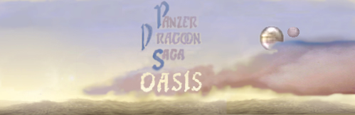

The Story of Panzer Dragoon Saga
(A PDS guide by Jeremy Prusak)
Brought to you by Panzer Dragoon Saga Oasis
Table of Contents
Home
Introduction
PDS Manual
World Map
Item Lists
Things You Should Know Before Playing PDS
Copyright Info
Special Thanks
Disc 1
Diary Entry 1: Ruins Bottom Floors
Diary Entry 2: (Valley) Above the Excavation Site
Diary Entry 3: Excavation Site
Diary Entry 4: (Above the Excavation Site) Conana's Nest
Diary Entry 5: (Valley) Excavation Site # 4
Diary Entry 6: (Valley) Deep Gulch
Diary Entry 7: Village of Cainus
Diary Entry 8: (Garil Desert) Worm Lair
Diary Entry 9: (Garil Desert) Green Oasis
Diary Entry 10: (Garil Desert) Blue Ruins
Diary Entry 11: Caravan
Diary Entry 12: Forbidden Zone
Disc 2
Diary Entry 13: Caravan Visit 2
Diary Entry 14: Village of Zoah
Diary Entry 15: Georgius
Diary Entry 16: Uru
Diary Entry 17: Underground Ruins of Uru
Disc 3
Diary Entry 18: Caravan Visit 3
Diary Entry 19: Village of Zoah Visit 2
Diary Entry 20: Imperial Air Force Post
Diary Entry 21: Village of Zoah Visit 3
Diary Entry 22: Mel-Kava
Diary Entry 23: Georgius Visit 2
Diary Entry 24: Imperial Air Force Post Visit 2
Diary Entry 25: The Tower
Disc 4
Diary Entry 26: Seekers' Stronghold
Diary Entry 27: Forest of Zoah
Diary Entry 28: Seekers' Stronghold Visit 2
Diary Entry 29: Underground Ruins of Uru Final Visit
Diary Entry 30: Seekers' Stronghold Final Visit
Diary Entry 31: The Tower Visit 2
Diary Entry 32: Side Quests
......................................?!!
(Divine Visitor) Final Diary Entry: The Final Battle
End Game Extras

Panzer Dragoon Saga Oasis:
An oasis of PDS content in a desert full of non-panzer websites